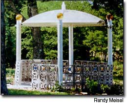
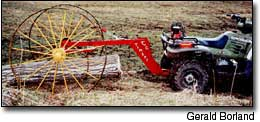
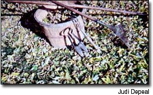
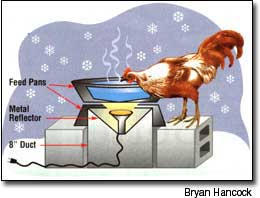

My wife and I decided we had the perfect place for a gazebo, but a problem we faced was an intense dislike for the style of most commercial gazebos. When a neighbor asked for help in removing an old satellite dish, a light bulb came on! We knew we had our roof and the starting point for our "out-of-the-ordinary" gazebo.
The first step was to level the area where the gazebo would be located and set the support columns in concrete. For the columns, we used 6-inch plastic pipe. For the roof supports, we used 1-inch plastic pipe running through the support columns, connected in the center with an 'X' fitting.
We poured a concrete footing as a level foundation for the low wall. This took a total of 55 bags of concrete, which we mixed in a wheelbarrow. In retrospect, concrete delivered by truck would have been much easier. The gazebo wall is made of three rows of decorative concrete blocks mortared together. We used the same blocks for the floor, filled with concrete and embedded with small multicolored river stones.
We prepared the 350-pound satellite dish by taking it apart, thoroughly cleaning it, and reassembling it with new stainless steel bolts and silicone to make it water tight. Using more pipe fittings, we rigged up a weather vane, and then we were ready to install the dish roof. Luckily, we have a friend with a tractor and bucket. He easily lifted the roof into place.
We put bolts through the dish and into the columns to secure the dish. We also installed gazing halls, fixed with silicone, onto the tops of the columns for a bit of whimsy and color. (You can buy white end caps to seal off the tops of the columns if you prefer.) We are now looking for colored glass balls to embed in the wall around the perimeter of the gazebo. The total effect will really solidify our reputation in the area for being a little different.
Overall, it's been an interesting and fun project. We have a gazebo that is virtually maintenance free and the added benefit of recycling an item that would have ended up in a landfill.
RANDY MEISEL
Fayetteville, Tennessee
My husband and I went to California on an Amtrak train in 1990. and we didn't get any of those little pillows they usually give to passengers. I thought, " I won't be without a pillow on my next Amtrak trip." And I wasn't.
I made pillows for my husband and myself, using a pair of 10-year-old slacks. I pride myself on never throwing anything away before thinking of a use other than its original purpose.
I cut a portion off each leg for the pillow part and a strip above that for the handles. This made two pillows, which I stuffed with polyester fiberfill. We used them on our next Amtrak trip and they were wonderful! Everyone along the way and at our destination thought so, too.
The pillows are easy to make and are great gifts for folks who travel a lot. They are made of beautiful colors and varying widths, depending on the slacks. Polyester makes a lovely material for the pillows because it is so stretchy. The filling can be as plump or as flat as you like.
I sell the patterns so others can enjoy making them, too. It's such a great satisfaction to have designed something so simple yet so useful.
FRANCES D. GOODE
Blakesburg, Iowa
I have a Polaris 50OCC ATV that I have been using for several years. Skidding logs has been one of the toughest jobs I have to do. I thought a log arch would be a great asset, but it seemed too expensive for my operation.
I decided I could make a serviceable log arch from an old horse-drawn hay rake. I simply cut the frame to narrow it up. I made the width a little wider than the ATV so the wheels would avoid ruts made by the ATV. The piece cut off the frame is used for the main beam of the arch. Braces from the rake were cut and reused. The hitch is formed from 3-inch channel iron and plated on each side for strength. This was the only welding I did for the whole project. All the other fastenings were bolts and, in many cases, I used existing holes. I did use a cutting torch for the cuts, but I could have used a hacksaw.
The result is an inexpensive and serviceable piece of equipment. It has increased my log skidding capability far beyond my expectations. The large-diameter wheels not only provide elevation, but also easily move over low stumps and downed timber. And I can maneuver it by hand in the woods to avoid trying to back up while hitched to a towing vehicle.
GERALD BORLAND
Carthage, New York
I love the earth and working with it. Here are some tidbits passed down from - family. My grandfather drove a nail into the ground near his apple trees. He said this gave them needed iron.
My grandmother saved her wood ashes in a pile in the corner of the yard. In spring we would haul the ashes to the garden in a wheelbarrow; then my grandfather plowed them into the soil. They had a wonderful garden.
My uncle taught me to never kill a black snake in or near the garden. He said they catch mice and rats.
ROBERT LEE
Williamsburg, Kentucky
Where I live on eastern Long Island, we have a private septic system and use groundwater for drinking. To protect my well, I do my cleaning of sinks, tubs, tile and countertops with baking soda. To boost its cleaning power I use plastic scrubbing pacts (the kind they sell for scrubbing pots) and use the baking soda as scouring powder. It removes soap scum pretty well. I don't need to use expensive, toxic cleaning agents like tub and tile cleaners on my surfaces. The baking soda saves my environment and my pocketbook, too.
NINA TRABONA
East Hampton, New York
I'm attracted to older, used garden tools because of their quality construction and their low prices. Old garden tools with metal parts were often forged from one piece of solid metal and then attached to solid wooden handles.
The trick to buying secondhand garden tools is to look for solid construction on welded points and pay special attention to where the metal attaches to the handle. If a tool has parts that are supposed to move, make sure they do. Another thing to look for on metal is heavy pitting and flaking, which weakens the metal so that the tool would be better suited for decoration than garden work.
Look for wooden handles made out of ash or hickory wood. Ash is a lighter-weight wood and not as tiring to use for garden chores. Hickory is heavy and durable, and was often used for short-handled tools. Check that the wood grain in a handle is straight all the way down. Inspect for cracks, past repairs and rotting. Watch out for handles and metal parts that are painted. The paint may be covering up cheap construction or damage.
Where can you buy used tools? Flea markets, garage sales, auctions, estate sales, barn sales and secondhand stores are good places. The prices can range from $1 to $40 for most used hand tools; very old, large, handcrafted, wooden tools can cost more; but you can usually buy common tools for less than $15. Happy hunting; the used garden tools you need are out there.
JUDI DEPEAL
Walbridge, Ohio
Here's an easy way to make a winter chicken waterer that is inexpensive and really works. The water won't freeze, even on the coldest nights.
YOU WILL NEED:
1 socket that will accept a metal reflector, 8-inches in diameter, around the bulb
1 piece of 8-inch plastic pipe, approximately 8-inches long
2 flat-bottomed metal feed pans, 8 to 10 inches in diameter
3 cinder blocks about 8 inches high
1 100-watt flood light
Directions: Screw the reflector onto the light socket. Screw in the bulb. Set reflector and light with the bulb up, in the 8-inch pipe. The reflector hangs off the top rim of the pipe.
Place the pipe on a level piece of ground so the bulb faces upward. Route the power cord through the bottom of the pipe. Place one pan upside down over the reflector with its edges resting on the cinder blocks. Place the second pan right side up on top of the first; put a rock in the top pan (to keep the chickens from tipping it over) and fill it with water.
Remember safety first and use a ground fault interruption (GFI) plug and an outdoor electrical cord.
BRYAN HANCOCK
Fairfield, Iowa
Have you learned some trick of the trade, secret formula or way to avoid disaster around the homestead? We'll pay you $25 to $50 for each letter we publish. Send info, with photos please, to "Country Lore"at Mother Earth News 1503 S.W. 42nd St.; Topeka, KS 66609-1265 or to letters@motherearthnews.com . - MOTHER
Mother Earth News
|
 |
|
 |
|
 |
 |
|